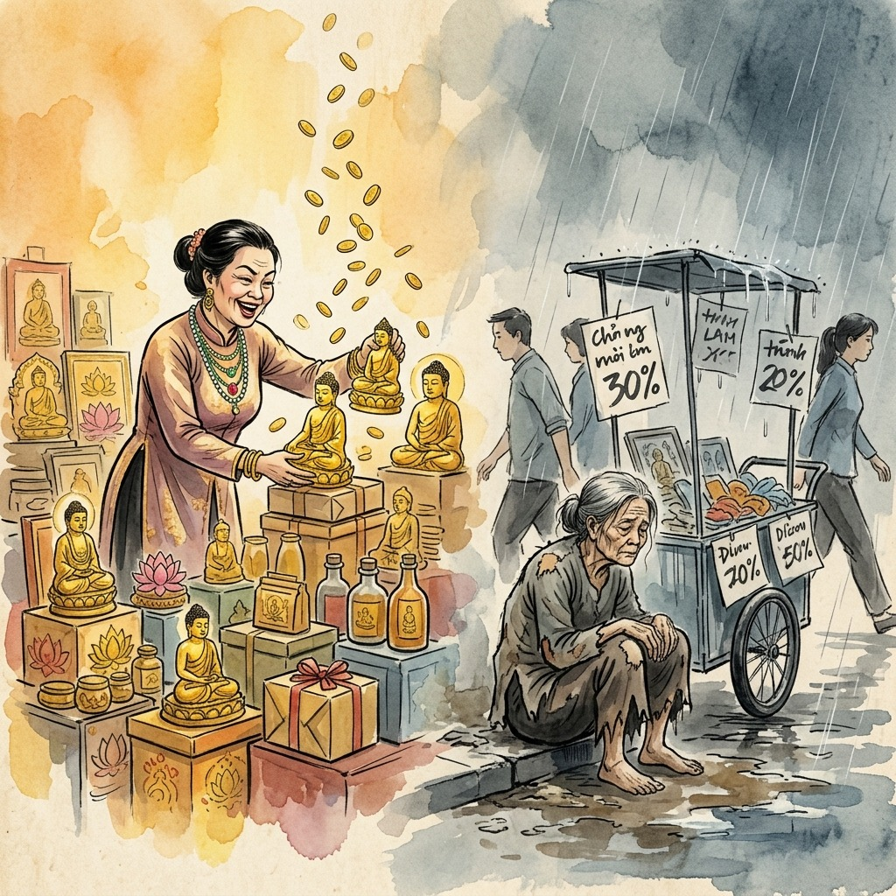
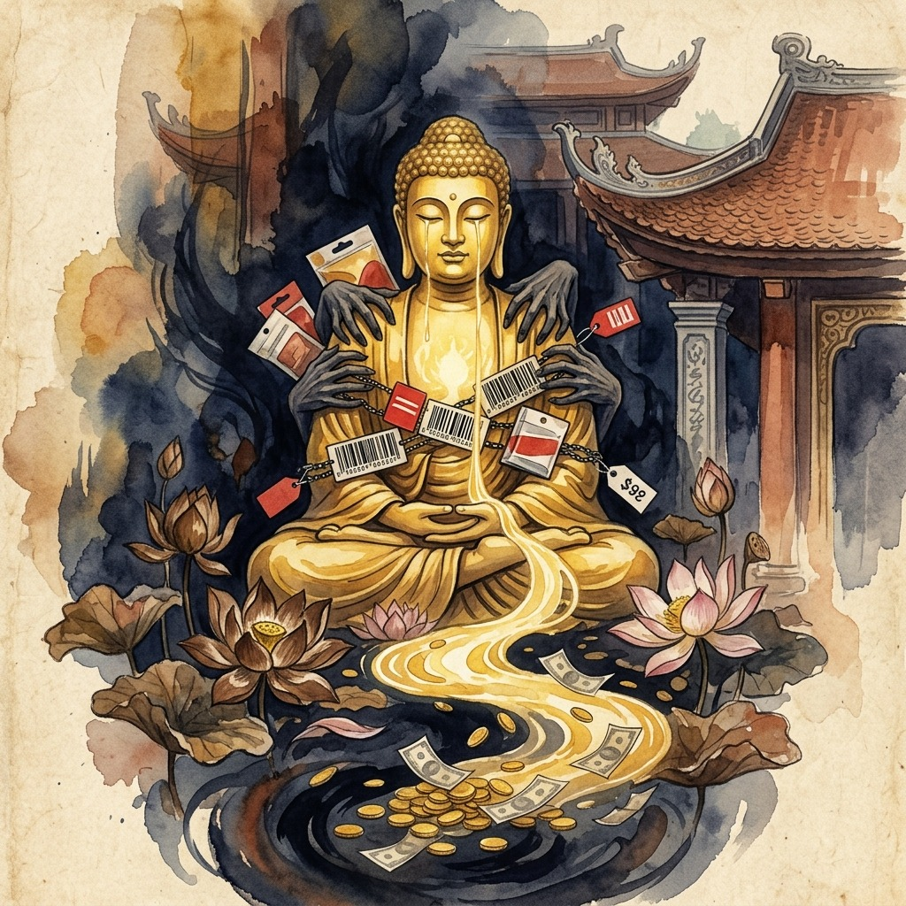
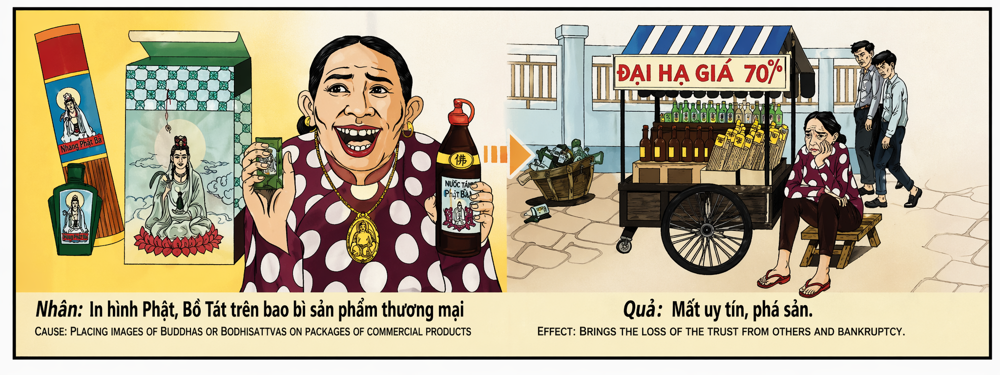

El Mercader de lo Sagrado The Merchant of the Sacred Il Mercante del Sacro 神圣的商贩 تاجر المقدّس Торговец священным Der Händler des Heiligen Le Marchand du Sacré 聖なるものの商人 O Mercador do Sagrado Kẻ Buôn Bán Trên Điều Thiêng Liêng
"Quien vende la imagen de Dios para llenar su bolsillo, vaciará su alma hasta que no le quede ni el eco de una moneda." "He who sells the image of God to fill his pocket will empty his soul until not even the echo of a coin remains." "Chi vende l'immagine di Dio per riempirsi le tasche, svuoterà la propria anima finché non resterà neppure l'eco di una moneta." “以神的形象牟利者，终将掏空自己的灵魂，直到连一枚硬币的回声都不剩。” "من يبيع صورة الله ليملأ جيبه، سيُفرغ روحه حتى لا يتبقى فيها صدى عملة واحدة." «Кто продаёт образ Божий ради наживы, опустошит свою душу, пока в ней не останется даже эха монеты». „Wer das Bild Gottes verkauft, um seine Taschen zu füllen, wird seine Seele leeren, bis nicht einmal das Echo einer Münze übrig bleibt.“ « Celui qui vend l'image de Dieu pour remplir ses poches videra son âme jusqu'à ce qu'il ne reste même pas l'écho d'une pièce. » 「神の姿を売って懐を満たす者は、一枚の硬貨のこだまさえ残らなくなるまで、己の魂を空にするだろう。」 "Quem vende a imagem de Deus para encher o bolso, esvaziará a sua alma até que não reste sequer o eco de uma moeda." "Kẻ bán hình ảnh của Thượng Đế để đầy túi, sẽ làm trống rỗng linh hồn mình cho đến khi không còn cả tiếng vọng của một đồng xu."
Hay un pecado que el universo castiga con una precisión quirúrgica y devastadora: usar lo sagrado como herramienta de lucro. Cuando alguien toma la imagen de un Buda, de un santo, de cualquier símbolo que millones de almas veneran con lágrimas y plegarias sinceras, y la estampa en un envase comercial para vender jabón, bebidas o cosméticos, está cometiendo una de las profanaciones más graves que existen en la economía espiritual. No roba dinero; roba la fe. Y quien roba la fe, pierde la suya propia hasta la última gota.
El mecanismo kármico es de una lógica aplastante: si usas la confianza que la gente deposita en lo divino para manipular sus decisiones de compra, el universo te retirará toda confianza. Tus socios te traicionarán. Tus clientes te abandonarán. Tus proveedores te cerrarán las puertas. No porque el cielo sea vengativo, sino porque la energía de la estafa sagrada corroe desde dentro la estructura misma de tu credibilidad. Es como si le pusieras un precio al aire que respiras: cuando el universo te quite ese aire, comprenderás que hay cosas que jamás debieron tener un código de barras.
La bancarrota que describe este karma no es solo financiera: es existencial. El comerciante que prostituye lo sagrado termina en una soledad interior donde ni el dinero ni las personas pueden llenar el vacío que dejó la profanación. Es la ley del espejo invertido: quien usó la imagen de lo eterno para obtener beneficios temporales, pierde tanto lo temporal como el acceso a lo eterno. La única salvación posible es la restitución genuina, devolver al mundo más belleza espiritual de la que se robó, y comprender que lo sagrado no es un recurso explotable, sino un fuego que, si se toca con manos codiciosas, quema hasta los cimientos.
There is a sin that the universe punishes with surgical and devastating precision: using the sacred as a tool for profit. When someone takes the image of a Buddha, a saint, any symbol that millions of souls venerate with tears and sincere prayers, and stamps it on a commercial package to sell soap, drinks, or cosmetics, they are committing one of the gravest profanations that exist in the spiritual economy. They do not steal money; they steal faith. And whoever steals faith loses their own to the very last drop.
The karmic mechanism follows crushing logic: if you use the trust people place in the divine to manipulate their purchasing decisions, the universe will strip you of all trust. Your partners will betray you. Your customers will abandon you. Your suppliers will shut their doors. Not because heaven is vengeful, but because the energy of sacred fraud corrodes from within the very structure of your credibility. It is like putting a price tag on the air you breathe: when the universe takes that air away, you will understand that some things should never have had a barcode.
The bankruptcy described by this karma is not merely financial: it is existential. The merchant who prostitutes the sacred ends up in an inner solitude where neither money nor people can fill the void left by the profanation. It is the law of the inverted mirror: whoever used the image of the eternal to obtain temporal benefits loses both the temporal and access to the eternal. The only possible salvation is genuine restitution—returning to the world more spiritual beauty than was stolen—and understanding that the sacred is not an exploitable resource, but a fire that, if touched with greedy hands, burns everything to the foundations.
Esiste un peccato che l'universo punisce con una precisione chirurgica e devastante: usare il sacro come strumento di lucro. Quando qualcuno prende l'immagine di un Buddha, di un santo, di qualsiasi simbolo che milioni di anime venerano con lacrime e preghiere sincere, e la stampa su una confezione commerciale per vendere sapone, bevande o cosmetici, sta commettendo una delle profanazioni più gravi che esistano nell'economia spirituale. Non ruba denaro; ruba la fede. E chi ruba la fede perde la propria fino all'ultima goccia.
Il meccanismo karmico segue una logica schiacciante: se usi la fiducia che le persone ripongono nel divino per manipolare le loro decisioni d'acquisto, l'universo ti toglierà ogni fiducia. I tuoi soci ti tradiranno. I tuoi clienti ti abbandoneranno. I tuoi fornitori ti chiuderanno le porte. Non perché il cielo sia vendicativo, ma perché l'energia della frode sacra corrode dall'interno la struttura stessa della tua credibilità. È come mettere un prezzo all'aria che respiri: quando l'universo ti toglierà quell'aria, capirai che ci sono cose che non avrebbero mai dovuto avere un codice a barre.
La bancarotta descritta da questo karma non è solo finanziaria: è esistenziale. Il mercante che prostituisce il sacro finisce in una solitudine interiore dove né il denaro né le persone possono riempire il vuoto lasciato dalla profanazione. È la legge dello specchio invertito: chi ha usato l'immagine dell'eterno per ottenere benefici temporali perde sia il temporale sia l'accesso all'eterno. L'unica salvezza possibile è la restituzione genuina, restituire al mondo più bellezza spirituale di quella rubata, e comprendere che il sacro non è una risorsa sfruttabile, ma un fuoco che, se toccato con mani avide, brucia tutto fino alle fondamenta.
有一种罪，宇宙会以外科手术般的精确和毁灭性来惩罚：将神圣之物作为牟利的工具。当有人取用佛陀、圣人或任何数以百万灵魂以泪水和真诚祈祷所崇敬的神圣象征，印刷在商业包装上去售卖肥皂、饮料或化妆品时，他正在犯下灵性经济中最严重的亵渎之一。他偷走的不是金钱，而是信仰。而偷走信仰的人，自己的信仰也将流失殆尽。
因果机制有着令人窒息的逻辑：如果你利用人们对神圣的信任来操纵他们的购买决定，宇宙将剥夺你所有的信任。你的合伙人会背叛你，客户会抛弃你，供应商会对你关上大门。这不是因为上天要报复，而是因为亵渎神圣的能量会从内部腐蚀你信誉的根基。就像给你呼吸的空气标上价格：当宇宙夺走那口空气时，你才会明白，有些东西永远不该有条形码。
这种业力所描述的破产不仅仅是财务上的：它是存在性的。将神圣出卖的商人最终陷入一种内在的孤独，金钱和人都无法填补亵渎所留下的空虚。这是反转镜像法则：利用永恒之象来获取世俗利益的人，既失去了世俗的一切，也失去了通往永恒的通道。唯一可能的救赎是真诚的偿还——归还给世界比所偷走的更多的灵性之美——并理解神圣不是可以开发的资源，而是一团火焰，若以贪婪之手触碰，会将一切燃烧至根基。
هناك ذنب يعاقب عليه الكون بدقة جراحية ومدمرة: استخدام المقدس كأداة للربح. عندما يأخذ شخص ما صورة بوذا أو قديس أو أي رمز يبجله ملايين الأرواح بالدموع والصلوات الصادقة، ويطبعها على عبوة تجارية لبيع الصابون أو المشروبات أو مستحضرات التجميل، فإنه يرتكب واحدة من أشد التدنيسات خطورة في الاقتصاد الروحي. إنه لا يسرق المال؛ بل يسرق الإيمان. ومن يسرق الإيمان يفقد إيمانه هو حتى آخر قطرة.
آلية الكارما تتبع منطقاً ساحقاً: إذا استخدمت الثقة التي يضعها الناس في الإلهي للتلاعب بقراراتهم الشرائية، فسيجردك الكون من كل ثقة. سيخونك شركاؤك. سيهجرك عملاؤك. سيغلق موردوك أبوابهم. ليس لأن السماء انتقامية، بل لأن طاقة الاحتيال المقدس تنخر من الداخل بنية مصداقيتك ذاتها. إنه كوضع سعر على الهواء الذي تتنفسه: عندما يسلبك الكون ذلك الهواء، ستفهم أن هناك أشياء ما كان ينبغي أبداً أن يكون لها رمز شريطي.
الإفلاس الذي يصفه هذا الكارما ليس مالياً فحسب: إنه وجودي. التاجر الذي يدنس المقدس ينتهي به المطاف في عزلة داخلية لا يستطيع فيها المال ولا البشر ملء الفراغ الذي خلفه التدنيس. إنه قانون المرآة المعكوسة: من استخدم صورة الأبدي للحصول على منافع زمنية يفقد كليهما - الزمني والوصول إلى الأبدي. الخلاص الوحيد الممكن هو الرد الحقيقي - إعادة جمال روحي للعالم أكثر مما سُرق - وفهم أن المقدس ليس مورداً قابلاً للاستغلال، بل نار إذا لمستها أيدٍ جشعة، تحرق كل شيء حتى الأساسات.
Есть грех, который Вселенная карает с хирургической и разрушительной точностью: использование священного как инструмента наживы. Когда кто-то берёт образ Будды, святого, любой символ, который миллионы душ почитают со слезами и искренними молитвами, и печатает его на коммерческой упаковке для продажи мыла, напитков или косметики, он совершает одно из тягчайших осквернений духовной экономики. Он крадёт не деньги — он крадёт веру. А тот, кто крадёт веру, теряет свою собственную до последней капли.
Кармический механизм следует сокрушительной логике: если ты используешь доверие, которое люди питают к божественному, чтобы манипулировать их покупательскими решениями, Вселенная лишит тебя всякого доверия. Партнёры предадут тебя. Клиенты покинут тебя. Поставщики закроют перед тобой двери. Не потому, что небеса мстительны, а потому, что энергия священного мошенничества разъедает изнутри саму структуру твоей репутации. Это как назначить цену воздуху, которым дышишь: когда Вселенная заберёт этот воздух, ты поймёшь, что некоторые вещи никогда не должны были иметь штрих-код.
Банкротство, описанное этой кармой, не только финансовое — оно экзистенциальное. Торговец, проституирующий священное, оказывается во внутреннем одиночестве, где ни деньги, ни люди не могут заполнить пустоту, оставленную осквернением. Это закон перевёрнутого зеркала: тот, кто использовал образ вечного для получения временных благ, теряет и временное, и доступ к вечному. Единственное возможное спасение — подлинное возмещение: вернуть миру больше духовной красоты, чем было украдено, и понять, что священное — не ресурс для эксплуатации, а огонь, который при прикосновении жадных рук сжигает всё до основания.
Es gibt eine Sünde, die das Universum mit chirurgischer und verheerender Präzision bestraft: das Heilige als Werkzeug des Profits zu missbrauchen. Wenn jemand das Bild eines Buddha, eines Heiligen, irgendeines Symbols, das Millionen von Seelen mit Tränen und aufrichtigen Gebeten verehren, nimmt und es auf eine kommerzielle Verpackung druckt, um Seife, Getränke oder Kosmetik zu verkaufen, begeht er eine der schwersten Entweihungen der geistigen Ökonomie. Er stiehlt kein Geld — er stiehlt den Glauben. Und wer den Glauben stiehlt, verliert seinen eigenen bis zum letzten Tropfen.
Der karmische Mechanismus folgt einer erdrückenden Logik: Wenn du das Vertrauen, das Menschen in das Göttliche setzen, nutzt, um ihre Kaufentscheidungen zu manipulieren, wird dir das Universum jedes Vertrauen entziehen. Deine Partner werden dich verraten. Deine Kunden werden dich verlassen. Deine Lieferanten werden ihre Türen verschließen. Nicht weil der Himmel rachsüchtig ist, sondern weil die Energie des heiligen Betrugs von innen heraus die Struktur deiner Glaubwürdigkeit zersetzt. Es ist, als würdest du der Luft, die du atmest, einen Preis geben: Wenn das Universum dir diese Luft nimmt, wirst du verstehen, dass manche Dinge niemals einen Strichcode hätten haben sollen.
Der von diesem Karma beschriebene Bankrott ist nicht nur finanzieller Natur — er ist existenziell. Der Händler, der das Heilige prostituiert, endet in einer inneren Einsamkeit, in der weder Geld noch Menschen die Leere füllen können, die die Entweihung hinterlassen hat. Es ist das Gesetz des umgekehrten Spiegels: Wer das Bild des Ewigen benutzte, um zeitliche Vorteile zu erlangen, verliert sowohl das Zeitliche als auch den Zugang zum Ewigen. Die einzig mögliche Rettung ist aufrichtige Wiedergutmachung — der Welt mehr geistige Schönheit zurückzugeben, als gestohlen wurde — und zu begreifen, dass das Heilige keine ausbeutbare Ressource ist, sondern ein Feuer, das bei Berührung durch gierige Hände alles bis auf die Grundmauern verbrennt.
Il existe un péché que l'univers punit avec une précision chirurgicale et dévastatrice : utiliser le sacré comme outil de profit. Quand quelqu'un prend l'image d'un Bouddha, d'un saint, de n'importe quel symbole que des millions d'âmes vénèrent avec des larmes et des prières sincères, et l'imprime sur un emballage commercial pour vendre du savon, des boissons ou des cosmétiques, il commet l'une des profanations les plus graves de l'économie spirituelle. Il ne vole pas de l'argent ; il vole la foi. Et celui qui vole la foi perd la sienne jusqu'à la dernière goutte.
Le mécanisme karmique suit une logique écrasante : si vous utilisez la confiance que les gens placent dans le divin pour manipuler leurs décisions d'achat, l'univers vous retirera toute confiance. Vos associés vous trahiront. Vos clients vous abandonneront. Vos fournisseurs vous fermeront leurs portes. Non parce que le ciel est vengeur, mais parce que l'énergie de la fraude sacrée ronge de l'intérieur la structure même de votre crédibilité. C'est comme mettre un prix sur l'air que vous respirez : quand l'univers vous ôtera cet air, vous comprendrez que certaines choses n'auraient jamais dû avoir de code-barres.
La faillite décrite par ce karma n'est pas seulement financière : elle est existentielle. Le marchand qui prostitue le sacré finit dans une solitude intérieure où ni l'argent ni les personnes ne peuvent combler le vide laissé par la profanation. C'est la loi du miroir inversé : celui qui a utilisé l'image de l'éternel pour obtenir des avantages temporels perd à la fois le temporel et l'accès à l'éternel. Le seul salut possible est la restitution sincère — rendre au monde plus de beauté spirituelle que ce qui a été volé — et comprendre que le sacré n'est pas une ressource exploitable, mais un feu qui, touché par des mains avides, brûle tout jusqu'aux fondations.
宇宙が外科的かつ壊滅的な正確さで罰する罪がある。それは、聖なるものを利益の道具として使うことだ。誰かが仏陀や聖者の像、あるいは何百万もの魂が涙と真摯な祈りをもって崇める聖なる象徴を手に取り、石鹸や飲料や化粧品を売るための商業パッケージに印刷するとき、その人は精神経済における最も重大な冒涜の一つを犯している。盗んでいるのは金ではない。信仰を盗んでいるのだ。そして信仰を盗む者は、自らの信仰を最後の一滴まで失う。
カルマのメカニズムは圧倒的な論理に従う。人々が神聖なものに寄せる信頼を購買判断の操作に利用すれば、宇宙はあなたからすべての信頼を剥奪する。パートナーは裏切り、顧客は去り、取引先は扉を閉ざす。天が復讐的だからではなく、神聖な詐欺のエネルギーが内側からあなたの信用そのものの構造を蝕むからだ。それは自分が吸う空気に値段をつけるようなもの。宇宙がその空気を奪ったとき、バーコードを付けてはならないものがあったのだと理解するだろう。
このカルマが描く破産は、単なる財政的なものではない。それは実存的なものだ。聖なるものを売り物にした商人は、金も人も冒涜が残した空虚を埋められない内なる孤独に行き着く。それは逆転した鏡の法則：永遠なるものの像を使って一時的な利益を得た者は、一時的なものも永遠なるものへのアクセスも両方を失う。唯一可能な救済は真摯な償い――盗んだ以上の精神的な美を世界に返すこと――そして聖なるものは搾取可能な資源ではなく、貪欲な手で触れれば基礎まですべてを焼き尽くす炎であると理解することだ。
Existe um pecado que o universo pune com precisão cirúrgica e devastadora: usar o sagrado como ferramenta de lucro. Quando alguém pega a imagem de um Buda, de um santo, de qualquer símbolo que milhões de almas veneram com lágrimas e preces sinceras, e a estampa numa embalagem comercial para vender sabão, bebidas ou cosméticos, está a cometer uma das profanações mais graves da economia espiritual. Não rouba dinheiro; rouba a fé. E quem rouba a fé perde a sua própria até à última gota.
O mecanismo kármico segue uma lógica esmagadora: se usas a confiança que as pessoas depositam no divino para manipular as suas decisões de compra, o universo retirar-te-á toda a confiança. Os teus sócios trair-te-ão. Os teus clientes abandonar-te-ão. Os teus fornecedores fechar-te-ão as portas. Não porque o céu seja vingativo, mas porque a energia da fraude sagrada corrói por dentro a própria estrutura da tua credibilidade. É como pôr um preço no ar que respiras: quando o universo te tirar esse ar, compreenderás que há coisas que jamais deveriam ter tido um código de barras.
A falência descrita por este karma não é apenas financeira: é existencial. O comerciante que prostitui o sagrado acaba numa solidão interior onde nem o dinheiro nem as pessoas podem preencher o vazio deixado pela profanação. É a lei do espelho invertido: quem usou a imagem do eterno para obter benefícios temporais perde tanto o temporal como o acesso ao eterno. A única salvação possível é a restituição genuína — devolver ao mundo mais beleza espiritual do que a que foi roubada — e compreender que o sagrado não é um recurso explorável, mas um fogo que, tocado por mãos gananciosas, queima tudo até aos alicerces.
Có một tội mà vũ trụ trừng phạt với sự chính xác như dao mổ và sức tàn phá khôn lường: sử dụng điều thiêng liêng làm công cụ kiếm lời. Khi ai đó lấy hình ảnh Đức Phật, Bồ Tát, hay bất kỳ biểu tượng nào mà hàng triệu linh hồn tôn kính bằng nước mắt và lời cầu nguyện chân thành, rồi in lên bao bì thương mại để bán xà phòng, đồ uống hay mỹ phẩm, người đó đang phạm phải một trong những sự xúc phạm nghiêm trọng nhất trong nền kinh tế tâm linh. Họ không cướp tiền bạc; họ cướp niềm tin. Và kẻ cướp niềm tin sẽ mất đi niềm tin của chính mình cho đến giọt cuối cùng.
Cơ chế nhân quả tuân theo một logic tàn khốc: nếu bạn lợi dụng niềm tin mà con người đặt vào đấng thiêng liêng để thao túng quyết định mua hàng của họ, vũ trụ sẽ tước bỏ mọi sự tin tưởng dành cho bạn. Đối tác sẽ phản bội bạn. Khách hàng sẽ rời bỏ bạn. Nhà cung cấp sẽ đóng cửa trước mặt bạn. Không phải vì trời cao trả thù, mà vì năng lượng của sự lừa đảo thiêng liêng ăn mòn từ bên trong chính cấu trúc uy tín của bạn. Giống như việc dán giá lên không khí bạn thở: khi vũ trụ lấy đi luồng không khí ấy, bạn mới hiểu rằng có những thứ không bao giờ nên có mã vạch.
Sự phá sản mà nghiệp lực này mô tả không chỉ là tài chính: nó mang tính hiện sinh. Kẻ buôn bán trên điều thiêng liêng cuối cùng sẽ rơi vào một sự cô đơn nội tâm, nơi tiền bạc lẫn con người đều không thể lấp đầy khoảng trống mà sự xúc phạm để lại. Đó là quy luật tấm gương ngược: ai dùng hình ảnh của cái vĩnh hằng để thu lợi tạm thời, sẽ mất cả cái tạm thời lẫn con đường đến cái vĩnh hằng. Sự cứu rỗi duy nhất là sự đền bù chân thành — trả lại cho thế giới nhiều vẻ đẹp tâm linh hơn những gì đã bị đánh cắp — và thấu hiểu rằng điều thiêng liêng không phải là tài nguyên có thể khai thác, mà là ngọn lửa, nếu bị bàn tay tham lam chạm vào, sẽ thiêu rụi tất cả đến tận nền móng.
La Vendedora de Agua Santa
The Holy Water Seller
Il venditore di acqua santa
卖圣水的人
بائع الماء المقدس
Продавец святой воды
Der Weihwasserverkäufer
Le vendeur d'eau bénite
聖水売り手
O vendedor de água benta
Người bán nước thánh
En un pueblo costero vivía una mujer llamada Hoa, conocida por su astucia comercial. Un día, descubrió que las ancianas del pueblo compraban agua de manantial que un monje bendecía en el templo. «Si le pongo la imagen de Buda a mis botellas», pensó, «venderé diez veces más que ese viejo monje». Así lo hizo: imprimió la imagen del Buda Amitabha en etiquetas doradas, llenó las botellas con agua corriente del grifo y las vendió como «Agua Sagrada de la Iluminación». Las ancianas, con los ojos llenos de fe, compraban cada botella besándola con reverencia.
Los primeros meses, Hoa nadaba en dinero. Se compró collares de oro, vestidos de seda y una casa con tejado de tejas rojas. Pero algo extraño empezó a suceder en su interior: cada noche, al cerrar los ojos, veía los rostros de aquellas ancianas rezando con sus botellas de agua falsa, y sentía un frío que ninguna manta podía calentar. Su marido empezó a desconfiar de ella. Sus hijos dejaron de mirarla a los ojos. Los proveedores comenzaron a exigirle pagos por adelantado porque «algo en ella ya no inspiraba confianza».
Un día, una tormenta destrozó su almacén y miles de botellas rodaron por el barro, revelando su secreto al pueblo entero. Pero lo que quebró a Hoa no fue la vergüenza pública ni la pérdida del dinero. Fue el momento en que la anciana más pobre del pueblo —una mujer ciega llamada Lan, que había gastado sus últimas monedas en aquellas botellas para rezar por la salud de su nieto enfermo— se arrodilló frente a ella y, en vez de maldecirla, le dijo con voz temblorosa: «Hija mía, yo rezaba cada noche con tu agua. Mi nieto se curó. Pero no fue por tu agua... fue porque mi fe era verdadera aunque la tuya fuese mentira. Te perdono, porque cargar con esa mentira debe doler más que cualquier enfermedad».
Hoa se derrumbó llorando como nunca había llorado en su vida. Las lágrimas de la anciana ciega le mostraron el abismo que había entre el valor de la fe y el precio de una botella. Vendió todo lo que tenía, devolvió cada moneda que pudo rastrear y pasó el resto de sus días limpiando el templo que había profanado con su codicia. Nunca recuperó su fortuna, pero recuperó algo infinitamente más valioso: la capacidad de mirar a los ojos de los demás sin que le temblaran las manos. Comprendió que quien pone precio a lo sagrado se está vendiendo a sí mismo, y que la única moneda que vale ante Dios es la que se entrega con las manos limpias y el corazón desnudo.
In a coastal town there lived a woman named Hoa, known for her business acumen. One day, he discovered that the old women of the village bought spring water that a monk blessed in the temple. "If I put the image of Buddha on my bottles," he thought, "I'll sell ten times more than that old monk." So he did it: he printed the image of Amitabha Buddha on gold labels, filled the bottles with ordinary tap water, and sold them as “Sacred Water of Enlightenment.” The old women, with eyes full of faith, bought each bottle, kissing it with reverence.
The first few months, Hoa was swimming in money. She bought gold necklaces, silk dresses and a house with a red tile roof. But something strange began to happen inside her: every night, when she closed her eyes, she saw the faces of those old women praying with their bottles of fake water, and she felt a cold that no blanket could warm. Her husband began to distrust her. Her children stopped looking her in the eyes. Suppliers began to demand advance payments because “something about her no longer inspired trust.”
One day, a storm destroyed their warehouse and thousands of bottles rolled through the mud, revealing their secret to the entire town. But what broke Hoa was not the public embarrassment or the loss of money. It was the moment when the poorest old woman in the village—a blind woman named Lan, who had spent her last coins on those bottles to pray for the health of her sick grandson—knelt in front of her and, instead of cursing her, told her with a trembling voice: “My daughter, I prayed every night with your water. My grandson was cured. But it wasn't because of your water... it was because my faith was true even if yours was a lie. I forgive you, because carrying that lie must hurt more than any illness.
Hoa collapsed crying like she had never cried in her life. The tears of the blind old woman showed her the abyss that existed between the value of faith and the price of a bottle. He sold everything he had, returned every coin he could trace, and spent the rest of his days cleansing the temple he had desecrated with his greed. He never recovered his fortune, but he recovered something infinitely more valuable: the ability to look into the eyes of others without his hands shaking. He understood that whoever puts a price on what is sacred is selling himself, and that the only currency that is valuable before God is the one that is given with clean hands and a naked heart.
In una città costiera viveva una donna di nome Hoa, nota per il suo senso degli affari. Un giorno scoprì che le vecchie del villaggio acquistavano l'acqua sorgiva che un monaco benediceva nel tempio. "Se mettessi l'immagine del Buddha sulle mie bottiglie", pensò, "venderò dieci volte di più di quel vecchio monaco". Così lo fece: stampò l’immagine del Buddha Amitabha su etichette d’oro, riempì le bottiglie con normale acqua di rubinetto e le vendette come “Acqua Sacra dell’Illuminazione”. Le vecchie, con gli occhi pieni di fede, comprarono ogni bottiglia, baciandola con reverenza.
Nei primi mesi Hoa nuotava nel denaro. Comprò collane d'oro, abiti di seta e una casa con il tetto di tegole rosse. Ma dentro di lei cominciò a succedere qualcosa di strano: ogni notte, quando chiudeva gli occhi, vedeva i volti di quelle vecchie che pregavano con le loro bottiglie di acqua finta, e sentiva un freddo che nessuna coperta poteva riscaldare. Suo marito cominciò a diffidare di lei. I suoi figli hanno smesso di guardarla negli occhi. I fornitori iniziarono a chiedere pagamenti anticipati perché “qualcosa in lei non ispirava più fiducia”.
Un giorno, una tempesta distrusse il loro magazzino e migliaia di bottiglie rotolarono nel fango, rivelando il loro segreto all'intera città. Ma ciò che ha rotto Hoa non è stato l’imbarazzo pubblico o la perdita di denaro. Fu il momento in cui la vecchia più povera del villaggio, una donna cieca di nome Lan, che aveva speso i suoi ultimi soldi in quelle bottiglie per pregare per la salute del nipote malato, si inginocchiò davanti a lei e, invece di maledirla, le disse con voce tremante: "Figlia mia, ho pregato ogni notte con la tua acqua. Mio nipote è guarito. Ma non è stato a causa della tua acqua... è perché la mia fede era vera anche se la tua era una menzogna. Ti perdono, perché portavi quella la menzogna deve far male più di qualunque malattia.
Hoa crollò piangendo come non aveva mai pianto in vita sua. Le lacrime della vecchia cieca le mostrarono l'abisso che esisteva tra il valore della fede e il prezzo di una bottiglia. Vendette tutto ciò che aveva, restituì ogni moneta che riuscì a rintracciare e trascorse il resto dei suoi giorni a ripulire il tempio che aveva profanato con la sua avidità. Non ha mai recuperato la sua fortuna, ma ha recuperato qualcosa di infinitamente più prezioso: la capacità di guardare negli occhi degli altri senza che gli tremino le mani. Capì che chi dà un prezzo a ciò che è sacro vende se stesso, e che l'unica moneta che ha valore davanti a Dio è quella donata con mani pulite e cuore nudo.
在一个沿海小镇上住着一位名叫霍阿的女人，她以她的商业头脑而闻名。有一天，他发现村里的老妇人买来了寺庙里一位和尚开光的泉水。 “如果我把佛像印在瓶子上，”他想，“我的销量会比那个老和尚多十倍。”于是他就这么做了：他把阿弥陀佛的形象印在金色的标签上，用普通的自来水装满瓶子，然后把它们作为“开悟圣水”出售。老妇人眼里充满了信仰，买下了每一瓶，并虔诚地亲吻着它。
最初几个月，Hoa 财源滚滚。她买了金项链、丝绸衣服和一座红瓦屋顶的房子。但她内心开始发生一些奇怪的事情：每天晚上，当她闭上眼睛时，她都会看到那些老妇人拿着假水瓶祈祷的脸，她感到一种任何毯子都温暖不了的寒冷。她的丈夫开始不信任她。她的孩子们不再直视她的眼睛。供应商开始要求预付款，因为“她身上的某些东西不再激发信任”。
有一天，一场暴风雨摧毁了他们的仓库，数千个瓶子滚入泥泞，向整个城镇揭露了他们的秘密。但令 Hoa 崩溃的并不是公众的尴尬或金钱的损失。就在那一刻，村里最穷的老妇人——一个名叫兰的盲人妇女，用她最后的硬币买了这些瓶子，为生病的孙子祈祷健康——跪在她面前，并没有咒骂她，而是用颤抖的声音告诉她：“我的女儿，我每天晚上都用你的水祈祷。我的孙子痊愈了。但这不是因为你的水……而是因为我的信仰是真实的，即使你的信仰是谎言。我原谅你，因为你背负着那个谎言。”一定比任何疾病都更痛苦。
霍亚哭得倒下，就像她一生中从未哭过一样。失明老妇的眼泪让她看到了信仰的价值和一瓶酒的价格之间存在的深渊。他卖掉了自己所有的一切，归还了所有他能追踪到的硬币，并用余生来清理他因贪婪而亵渎的圣殿。他再也没有恢复自己的财产，但他恢复了更有价值的东西：能够在双手不颤抖的情况下看着别人的眼睛。他明白，凡为神圣之物标价的人都是在出卖自己，而在上帝面前唯一有价值的货币就是用干净的手和赤裸的心所给予的货币。
في بلدة ساحلية عاشت امرأة تدعى هوا، معروفة بفطنتها التجارية. وفي أحد الأيام، اكتشف أن نساء القرية المسنات اشترين مياه الينابيع التي باركها أحد الرهبان في المعبد. وقال في نفسه: "إذا وضعت صورة بوذا على زجاجاتي، فسوف أبيع عشرة أضعاف ما يبيعه ذلك الراهب العجوز". وهكذا فعل ذلك: فطبع صورة أميتابها بوذا على ملصقات ذهبية، وملأ الزجاجات بمياه الصنبور العادية، وباعها على أنها «مياه التنوير المقدسة». اشترت النساء العجائز، بأعين مليئة بالإيمان، كل زجاجة، وقبلنها بإجلال.
في الأشهر القليلة الأولى، كان هوا يسبح في المال. اشترت قلائد ذهبية وفساتين حريرية ومنزلًا بسقف من القرميد الأحمر. لكن شيئًا غريبًا بدأ يحدث بداخلها: كل ليلة، عندما تغمض عينيها، ترى وجوه هؤلاء النساء العجائز يصلون بقوارير الماء المزيفة، وتشعر ببرد لا تستطيع أي بطانية أن تدفئه. بدأ زوجها لا يثق بها. توقف أطفالها عن النظر في عينيها. بدأ الموردون يطالبون بدفعات مقدمة لأن "شيئًا ما فيها لم يعد يبعث على الثقة".
في أحد الأيام، دمرت عاصفة مستودعهم وتدحرجت آلاف الزجاجات في الوحل، لتكشف سرهم للمدينة بأكملها. لكن ما فاجأ هوا لم يكن الإحراج العام أو خسارة المال. كانت تلك هي اللحظة التي ركعت فيها أفقر امرأة عجوز في القرية - امرأة عمياء تدعى لان، أنفقت آخر عملاتها المعدنية على تلك الزجاجات للصلاة من أجل صحة حفيدها المريض - وبدلاً من أن تلعنها، قالت لها بصوت مرتعش: "يا ابنتي، لقد صليت كل ليلة بماءك. لقد شفي حفيدي. لكن لم يكن ذلك بسبب مياهك... بل لأن إيماني كان صادقًا حتى لو كان إيمانك كذبًا. أنا أسامحك، لأن حمل هذا الماء". الكذب يجب أن يؤذي أكثر من أي مرض.
انهارت هوا بالبكاء كما لم تبكي في حياتها. وأظهرت لها دموع المرأة العجوز العمياء الهوة الموجودة بين قيمة الإيمان وسعر الزجاجة. لقد باع كل ما كان لديه، وأعاد كل عملة معدنية يمكن أن يتتبعها، وقضى بقية أيامه في تطهير المعبد الذي دنسه بجشعه. لم يسترد ثروته أبدًا، لكنه استعاد شيئًا أكثر قيمة بلا حدود: القدرة على النظر في عيون الآخرين دون أن ترتعش يداه. لقد فهم أن من يثمن المقدسات فهو يبيع نفسه، وأن العملة الوحيدة التي لها قيمة أمام الله هي تلك التي تُعطى بأيدٍ نظيفة وقلبٍ مجرد.
В прибрежном городке жила женщина по имени Хоа, известная своей деловой хваткой. Однажды он обнаружил, что старушки деревни купили родниковую воду, которую освятил в храме монах. «Если я помещу на свои бутылки изображение Будды, — думал он, — я продам в десять раз больше, чем тот старый монах». Так он и сделал: напечатал изображение Будды Амитабхи на золотых этикетках, наполнил бутылки обычной водопроводной водой и продавал их как «Священную воду просветления». Старушки с глазами, полными веры, покупали каждую бутылку, с благоговением целуя ее.
Первые несколько месяцев Хоа купался в деньгах. Она купила золотые ожерелья, шелковые платья и дом с красной черепичной крышей. Но внутри нее стало происходить что-то странное: каждую ночь, закрывая глаза, она видела лица тех старух, молящихся со своими бутылками с поддельной водой, и чувствовала холод, который не могло согреть никакое одеяло. Муж начал ей не доверять. Дети перестали смотреть ей в глаза. Поставщики стали требовать предоплату, потому что «что-то в ней больше не внушало доверия».
Однажды ураган разрушил их склад, и тысячи бутылок покатились по грязи, раскрыв свою тайну всему городу. Но то, что сломало Хоа, было не публичное замешательство или потеря денег. Это был момент, когда самая бедная старуха в деревне - слепая женщина по имени Лан, которая потратила свои последние монеты на эти бутылки, чтобы помолиться за здоровье своего больного внука - опустилась перед ней на колени и, вместо того чтобы проклясть ее, сказала ей дрожащим голосом: "Дочь моя, я молилась каждую ночь с твоей водой. Мой внук выздоровел. Но это было не из-за твоей воды... это было потому, что моя вера была истинной, даже если твоя была ложью. Я прощаю тебя, потому что несла эта ложь должна ранить больше, чем любая болезнь.
Хоа упала в обморок и заплакала так, как будто никогда в жизни не плакала. Слезы слепой старухи показали ей ту пропасть, которая существовала между ценностью веры и ценой бутылки. Он продал все, что имел, вернул все монеты, которые смог найти, и провел остаток своих дней, очищая храм, который осквернил своей жадностью. Он так и не вернул свое состояние, но обрел нечто бесконечно более ценное: способность смотреть другим в глаза, не дрожащими руками. Он понимал, что тот, кто назначает цену святому, продает самого себя, и что единственная валюта, имеющая ценность перед Богом, — это та, которая дается чистыми руками и обнаженным сердцем.
In einer Küstenstadt lebte eine Frau namens Hoa, die für ihren Geschäftssinn bekannt war. Eines Tages entdeckte er, dass die alten Frauen des Dorfes Quellwasser kauften, das ein Mönch im Tempel gesegnet hatte. „Wenn ich das Bild von Buddha auf meine Flaschen setze“, dachte er, „verkaufe ich zehnmal mehr als dieser alte Mönch.“ Also tat er es: Er druckte das Bild von Amitabha Buddha auf goldene Etiketten, füllte die Flaschen mit gewöhnlichem Leitungswasser und verkaufte sie als „Heiliges Wasser der Erleuchtung“. Mit gläubigen Augen kauften die alten Frauen jede Flasche und küssten sie ehrfürchtig.
In den ersten Monaten schwamm Hoa im Geld. Sie kaufte goldene Halsketten, Seidenkleider und ein Haus mit einem roten Ziegeldach. Aber etwas Seltsames begann in ihr zu geschehen: Jede Nacht, wenn sie die Augen schloss, sah sie die Gesichter dieser alten Frauen, die mit ihren Flaschen mit künstlichem Wasser beteten, und sie spürte eine Kälte, die keine Decke wärmen konnte. Ihr Mann begann ihr zu misstrauen. Ihre Kinder sahen ihr nicht mehr in die Augen. Lieferanten begannen, Vorauszahlungen zu verlangen, weil „etwas an ihr kein Vertrauen mehr erweckte“.
Eines Tages zerstörte ein Sturm ihr Lagerhaus und Tausende von Flaschen rollten durch den Schlamm und enthüllten ihr Geheimnis der ganzen Stadt. Aber was Hoa kaputt machte, war nicht die öffentliche Blamage oder der Geldverlust. Es war der Moment, als die ärmste alte Frau im Dorf – eine blinde Frau namens Lan, die ihre letzten Münzen für diese Flaschen ausgegeben hatte, um für die Gesundheit ihres kranken Enkels zu beten – vor ihr kniete und, anstatt sie zu verfluchen, mit zitternder Stimme zu ihr sagte: „Meine Tochter, ich habe jeden Abend mit deinem Wasser gebetet. Mein Enkel wurde geheilt. Aber es lag nicht an deinem Wasser ... es lag daran, dass mein Glaube wahr war, auch wenn deiner eine Lüge war. Ich vergebe dir, weil ich diese Lüge getragen habe.“ muss mehr weh tun als jede Krankheit.
Hoa brach weinend zusammen, als hätte sie noch nie in ihrem Leben geweint. Die Tränen der blinden alten Frau zeigten ihr die Kluft zwischen dem Wert des Glaubens und dem Preis einer Flasche. Er verkaufte alles, was er hatte, gab jede Münze zurück, die er finden konnte, und verbrachte den Rest seiner Tage damit, den Tempel zu reinigen, den er durch seine Gier entweiht hatte. Er hat sein Vermögen nie wiedererlangt, aber er hat etwas unendlich Wertvolleres zurückgewonnen: die Fähigkeit, anderen in die Augen zu schauen, ohne dass seine Hände zittern. Er verstand, dass jeder, der einen Preis für das Heilige festlegt, sich selbst verkauft, und dass die einzige Währung, die vor Gott wertvoll ist, diejenige ist, die mit reinen Händen und nacktem Herzen gegeben wird.
Dans une ville côtière vivait une femme nommée Hoa, connue pour son sens des affaires. Un jour, il découvre que les vieilles femmes du village achetaient de l'eau de source qu'un moine bénissait dans le temple. "Si je mets l'image de Bouddha sur mes bouteilles", pensa-t-il, "je vendrai dix fois plus que ce vieux moine." C’est ce qu’il a fait : il a imprimé l’image du Bouddha Amitabha sur des étiquettes dorées, a rempli les bouteilles avec de l’eau du robinet ordinaire et les a vendues comme « Eau sacrée de l’illumination ». Les vieilles femmes, les yeux pleins de foi, achetaient chaque bouteille en l'embrassant avec révérence.
Les premiers mois, Hoa nageait dans l’argent. Elle a acheté des colliers en or, des robes en soie et une maison au toit de tuiles rouges. Mais quelque chose d'étrange commençait à se produire en elle : chaque nuit, lorsqu'elle fermait les yeux, elle voyait les visages de ces vieilles femmes qui priaient avec leurs bouteilles de fausse eau, et elle ressentait un rhume qu'aucune couverture ne pouvait réchauffer. Son mari commença à se méfier d'elle. Ses enfants ont arrêté de la regarder dans les yeux. Les fournisseurs ont commencé à exiger des paiements anticipés parce que « quelque chose chez elle n’inspirait plus confiance ».
Un jour, une tempête détruit leur entrepôt et des milliers de bouteilles roulent dans la boue, révélant leur secret à toute la ville. Mais ce qui a brisé Hoa, ce n’est pas l’embarras public ni la perte d’argent. C'était le moment où la vieille femme la plus pauvre du village, une aveugle nommée Lan, qui avait dépensé ses dernières pièces d'argent pour ces bouteilles pour prier pour la santé de son petit-fils malade, s'agenouilla devant elle et, au lieu de la maudire, lui dit d'une voix tremblante : "Ma fille, j'ai prié chaque nuit avec ton eau. Mon petit-fils a été guéri. Mais ce n'est pas à cause de ton eau... c'est parce que ma foi était vraie même si la tienne était un mensonge. Je te pardonne, parce que porter ça le mensonge doit faire plus mal que n’importe quelle maladie.
Hoa s'est effondrée en pleurant comme elle n'avait jamais pleuré de sa vie. Les larmes de la vieille aveugle lui montrèrent l'abîme qui existait entre la valeur de la foi et le prix d'une bouteille. Il vendit tout ce qu'il possédait, rendit chaque pièce de monnaie qu'il pouvait retrouver et passa le reste de ses jours à nettoyer le temple qu'il avait profané par sa cupidité. Il n’a jamais récupéré sa fortune, mais il a récupéré quelque chose d’infiniment plus précieux : la capacité de regarder les autres dans les yeux sans que ses mains tremblent. Il a compris que quiconque met un prix sur ce qui est sacré se vend lui-même, et que la seule monnaie qui a de la valeur devant Dieu est celle qui est donnée avec des mains pures et un cœur nu.
ある海岸沿いの町に、商才で知られるホアという女性が住んでいました。ある日、彼は、村の老婆たちが寺院で僧侶が祝福した湧き水を購入していることを発見しました。 「ボトルに仏陀の像を入れたら、あの老僧の10倍売れるだろう」と彼は考えた。そこで彼は、金色のラベルに阿弥陀仏の像を印刷し、ボトルに普通の水道水を入れて「悟りの聖水」として販売しました。老婦人たちは信仰に満ちた目をして、敬意を込めて瓶を一つ一つ買い、それにキスをしました。
最初の数か月間、ホアはお金で泳いでいました。彼女は金のネックレス、絹のドレス、そして赤い瓦屋根の家を買いました。しかし、何か奇妙なことが彼女の中で起こり始めました。毎晩、目を閉じると、偽の水の入ったボトルを手に祈っている老婦人たちの顔が見え、毛布でも温めることのできない寒さを感じました。彼女の夫は彼女に不信感を抱き始めた。彼女の子供たちは彼女の目を見ることをやめた。サプライヤーは「彼女に関する何かがもはや信頼を呼び起こしていない」ため、前払いを要求し始めた。
ある日、嵐が彼らの倉庫を破壊し、何千ものボトルが泥の中を転がり、その秘密が町全体に明らかになりました。しかし、ホアさんを傷付けたのは、世間で恥をかかされたことでも、お金を失ったことでもありませんでした。それは、村で一番貧しい老婆――病気の孫の健康を祈るために最後の小銭をその瓶につぎ込んだランという名の盲目の女性――が彼女の前に跪き、罵る代わりに震える声でこう言った瞬間だった。その嘘はどんな病気よりも傷つくに違いない。
ホアは人生で一度も泣いたことがないように泣き崩れた。盲目の老婦人の涙は、信仰の価値と瓶の値段の間に存在する深淵を示しました。彼は持っていたものをすべて売り払い、追跡できる限りのすべてのコインを返し、残りの日々を自分の貪欲さで汚した寺院を浄化することに費やしました。彼は財産を取り戻すことはできませんでしたが、それよりもはるかに価値のあるもの、つまり手を震えずに他人の目を見つめる能力を取り戻しました。神聖なものに値段を付ける人は自分を売り渡していること、神の前で価値のある唯一の通貨は、きれいな手と裸の心で与えられたものであることを彼は理解していました。
Numa cidade costeira vivia uma mulher chamada Hoa, conhecida pela sua perspicácia para os negócios. Um dia, descobriu que as velhas da aldeia compravam água de nascente que um monge abençoou no templo. “Se eu colocar a imagem de Buda em minhas garrafas”, pensou ele, “venderei dez vezes mais do que aquele velho monge”. Então ele fez isso: imprimiu a imagem do Buda Amitabha em rótulos dourados, encheu as garrafas com água comum da torneira e as vendeu como “Água Sagrada da Iluminação”. As velhas, com os olhos cheios de fé, compraram cada garrafa, beijando-as com reverência.
Nos primeiros meses, Hoa estava nadando em dinheiro. Comprou colares de ouro, vestidos de seda e uma casa com telhado vermelho. Mas algo estranho começou a acontecer dentro dela: todas as noites, ao fechar os olhos, via os rostos daquelas velhas rezando com suas garrafas de água falsa, e sentia um frio que nenhum cobertor conseguia aquecer. Seu marido começou a desconfiar dela. Seus filhos pararam de olhar nos olhos dela. Os fornecedores começaram a exigir pagamentos adiantados porque “algo nela não inspirava mais confiança”.
Um dia, uma tempestade destruiu o seu armazém e milhares de garrafas rolaram pela lama, revelando o seu segredo a toda a cidade. Mas o que quebrou Hoa não foi o constrangimento público ou a perda de dinheiro. Foi o momento em que a velha mais pobre da aldeia – uma cega chamada Lan, que gastara as últimas moedas naquelas garrafas para rezar pela saúde do seu neto doente – se ajoelhou diante dela e, em vez de amaldiçoá-la, disse-lhe com a voz trêmula: “Minha filha, eu rezava todas as noites com a sua água. deve doer mais do que qualquer doença.
Hoa desabou chorando como se nunca tivesse chorado na vida. As lágrimas da velha cega mostraram-lhe o abismo que existia entre o valor da fé e o preço de uma garrafa. Ele vendeu tudo o que tinha, devolveu todas as moedas que encontrou e passou o resto de seus dias limpando o templo que havia profanado com sua ganância. Ele nunca recuperou sua fortuna, mas recuperou algo infinitamente mais valioso: a capacidade de olhar nos olhos dos outros sem tremer as mãos. Ele entendeu que quem coloca um preço no que é sagrado está se vendendo, e que a única moeda que tem valor diante de Deus é aquela que é dada com as mãos limpas e o coração nu.
Ở một thị trấn ven biển có một người phụ nữ tên Hoa, nổi tiếng là người nhạy bén trong kinh doanh. Một ngày nọ, anh phát hiện ra rằng các bà già trong làng đã mua nước suối được một nhà sư ban phước trong chùa. Ông nghĩ: “Nếu mình đặt hình Đức Phật lên chai của mình thì mình sẽ bán được gấp mười lần ông sư già đó”. Vì vậy, ông đã làm điều đó: ông in hình ảnh Đức Phật A Di Đà lên nhãn vàng, đổ đầy nước máy thông thường vào chai và bán chúng với tên gọi “Nước thiêng của sự giác ngộ”. Các bà lão với ánh mắt đầy niềm tin mua từng chai, hôn nó với vẻ thành kính.
Những tháng đầu tiên, Hoa bơi trong tiền. Cô mua những chiếc vòng cổ bằng vàng, váy lụa và một ngôi nhà mái ngói đỏ. Nhưng có điều gì đó kỳ lạ bắt đầu xảy ra trong cô: mỗi đêm, khi nhắm mắt lại, cô nhìn thấy khuôn mặt của những bà già đang cầu nguyện với những chai nước giả của họ, và cô cảm thấy lạnh đến nỗi không một chiếc chăn nào có thể sưởi ấm được. Chồng cô bắt đầu không tin tưởng cô. Các con cô ngừng nhìn vào mắt cô. Các nhà cung cấp bắt đầu yêu cầu thanh toán trước vì “điều gì đó ở cô ấy không còn tạo được niềm tin nữa”.
Một ngày nọ, một cơn bão đã phá hủy nhà kho của họ và hàng nghìn chiếc chai lăn xuống bùn, tiết lộ bí mật của họ cho toàn bộ thị trấn. Nhưng điều khiến Hoa thất vọng không phải là sự xấu hổ của công chúng hay việc mất tiền. Đó là lúc bà già nghèo nhất làng - một bà mù tên Lan, người đã tiêu những đồng tiền cuối cùng của mình vào những chiếc chai đó để cầu nguyện cho sức khỏe của đứa cháu trai ốm yếu của mình - quỳ xuống trước mặt bà và thay vì chửi rủa bà, bà nói với giọng run run: "Con gái ơi, đêm nào mẹ cũng cầu nguyện bằng nước của con. Cháu trai của mẹ đã khỏi bệnh. Nhưng không phải nhờ nước của con... đó là vì niềm tin của mẹ là đúng ngay cả khi niềm tin của con là dối trá. Tôi tha thứ cho con, vì mang theo lời nói dối đó chắc chắn sẽ tổn thương hơn bất kỳ điều gì." bệnh tật.
Hoa gục xuống khóc như chưa từng được khóc trong đời. Những giọt nước mắt của bà già mù đã cho bà thấy vực thẳm tồn tại giữa giá trị của niềm tin và giá của một cái chai. Anh ta bán tất cả những gì mình có, trả lại mọi đồng xu mà anh ta có thể theo dõi, và dành những ngày còn lại của mình để dọn dẹp ngôi đền mà anh ta đã xúc phạm vì lòng tham của mình. Anh ta không bao giờ lấy lại được tài sản của mình, nhưng anh ta đã lấy lại được một thứ có giá trị hơn vô cùng: khả năng nhìn vào mắt người khác mà tay không run. Ông hiểu rằng bất cứ ai đặt giá cho những gì thiêng liêng là bán chính mình, và đồng tiền duy nhất có giá trị trước mặt Chúa là đồng tiền được trao với đôi tay trong sạch và trái tim trần trụi.

La Inspiración Original
The Original Inspiration

🇻🇳 Tiếng Việt (Gốc):
Nhân: In hình Phật, Bồ Tát trên bao bì sản phẩm thương mại.
Quả: Mất uy tín, phá sản.
🇪🇸 Traducción Recreada:
Causa: Utilizar imágenes sagradas de Budas o Bodhisattvas en envases de productos comerciales con el fin de explotar la devoción religiosa para obtener beneficios económicos.
Efecto: El karma destruye la credibilidad del individuo ante la sociedad, provocando la pérdida total de confianza, el abandono de socios y clientes, y finalmente la bancarrota material y espiritual.
🇬🇧 Recreated Translation:
Cause: Using sacred images of Buddhas or Bodhisattvas on commercial product packaging in order to exploit religious devotion for financial gain.
Effect: Karma destroys the credibility of the individual before society, causing the total loss of trust, the abandonment of partners and clients, and finally material and spiritual bankruptcy.
🇮🇹 Traduzione Ricreata:
Causa: Utilizzo di immagini sacre di Buddha o Bodhisattva sulle confezioni di prodotti commerciali al fine di sfruttare la devozione religiosa a scopo di lucro.
Effetto: Il karma distrugge la credibilità dell'individuo davanti alla società, causando la perdita totale della fiducia, l'abbandono di partner e clienti e infine la bancarotta materiale e spirituale.
🇨🇳 重建的翻译:
原因: 在商业产品包装上使用佛或菩萨的神圣图像，以利用宗教信仰来获取经济利益。
影响: 业力摧毁个人在社会面前的信誉，导致信任的彻底丧失，合作伙伴和客户的抛弃，最终导致物质和精神的破产。
🇦🇪 الترجمة المُعاد صياغتها:
سبب: استخدام الصور المقدسة لبوذا أو بوديساتفاس على عبوات المنتجات التجارية من أجل استغلال التفاني الديني لتحقيق مكاسب مالية.
تأثير: الكارما تدمر مصداقية الفرد أمام المجتمع، وتسبب فقدان الثقة بشكل كامل، والتخلي عن الشركاء والعملاء، وأخيراً الإفلاس المادي والروحي.
🇷🇺 Воссозданный перевод:
Причина: Использование священных изображений Будд или Бодхисаттв на упаковке коммерческой продукции с целью использования религиозной преданности для получения финансовой выгоды.
Эффект: Карма разрушает авторитет личности перед обществом, вызывая полную потерю доверия, отказ от партнеров и клиентов и, наконец, материальное и духовное банкротство.
🇩🇪 Rekonstruierte Übersetzung:
Ursache: Verwendung heiliger Bilder von Buddhas oder Bodhisattvas auf kommerziellen Produktverpackungen, um religiöse Hingabe für finanziellen Gewinn auszunutzen.
Wirkung: Karma zerstört die Glaubwürdigkeit des Einzelnen vor der Gesellschaft und führt zum völligen Vertrauensverlust, zum Verlassen von Partnern und Kunden und schließlich zum materiellen und spirituellen Bankrott.
🇫🇷 Traduction Recréée:
Cause: Utiliser des images sacrées de bouddhas ou de bodhisattvas sur des emballages de produits commerciaux afin d'exploiter la dévotion religieuse à des fins financières.
Effet: Le karma détruit la crédibilité de l'individu devant la société, provoquant la perte totale de confiance, l'abandon des partenaires et des clients, et finalement la faillite matérielle et spirituelle.
🇯🇵 再現された翻訳:
原因: 経済的利益のために宗教的信仰を利用するために、商品パッケージに仏陀や菩薩の神聖な画像を使用すること。
効果: カルマは社会に対する個人の信頼を破壊し、完全な信頼の喪失、パートナーや顧客の見捨て、そして最終的に物質的および精神的な破産を引き起こします。
🇵🇹 Tradução Recriada:
Causa: Utilizar imagens sagradas de Budas ou Bodhisattvas em embalagens de produtos comerciais, a fim de explorar a devoção religiosa para obter ganhos financeiros.
Efeito: O carma destrói a credibilidade do indivíduo perante a sociedade, provocando a perda total de confiança, o abandono de parceiros e clientes e, por fim, a falência material e espiritual.
🇻🇳 Bản Dịch Tái Hiện:
Gây ra: Sử dụng hình ảnh thiêng liêng của chư Phật hoặc Bồ Tát trên bao bì sản phẩm thương mại nhằm lợi dụng lòng sùng đạo tôn giáo để thu lợi tài chính.
Tác dụng: Nghiệp báo hủy hoại uy tín của cá nhân trước xã hội, gây mất niềm tin hoàn toàn, bỏ rơi đối tác và khách hàng, cuối cùng là phá sản về vật chất và tinh thần.
Si quieres conocer más sobre el proyecto o colaborar, accede a nuestro Linktree.